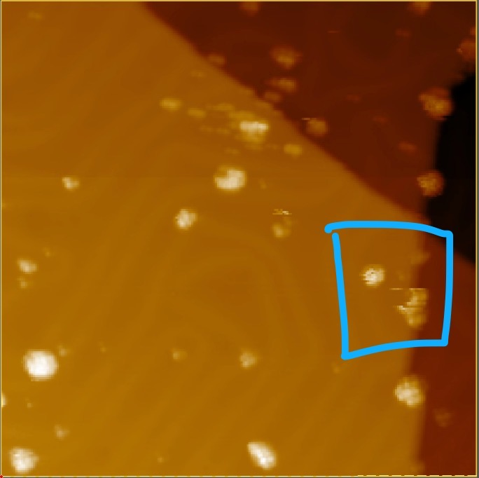

Au(111)前置实验证据：完整图、动作与中断
2026-11-02 可移植精选发布。完整尝试1/5，严格成功闭环0，余4。包含S01完整修前196→调理→修后197→无调理复核198，以及S02无调理速度诊断199/200和随后一次脉冲；S02返回期间发生中断，用户后确认该时段有人工操作，尚无完整修后图。真实实机证据与仓库synthetic/Demo成绩分开。
后续用户确认：20:47有其他实验员操作。具体手动命令及全部物理变化尚未提供；原审计当时记“未知”的历史证据不修改。此信息解释了存在人工干预，不能据此反推脉冲损坏或宣称修复成功。
原文与来源时间说明。
S01详细历史报告与图层 · S02续实验详细历史报告 · 导出SHA与源文件索引 · 未上传原生原始文件清单 · 其他省略项。
当前科学结论与记录范围
| 证据段 | 支持及限制 |
|---|
| S01 196→197→198 | 实际准备／一次−5V20msHold／返回／完整修后与复核均有记录；局部成像改善支持L2，历史严格L3未通过，不改旧判据或成功数。 |
| S02 199→200 | 相同重新接近后的两速度完整图；纳米对象可辨，200长横线减少但局部重复事件仍在。旧BG框含对象／台阶标N/A，不证明全针脏；速度、时间、顺序混杂，不计脉冲修复。 |
| S02后续动作 | 准备11步到1nA，单次−5V20msHold，软件下限平台真实峰值未知；已知脉冲结束并30s恢复。返回11步到100pA后约1.1s settle出现Off/Home，最终30s未开始；无after完整图，不计第二次完整尝试。 |
| 原生归档 | S01 229块／5707660行每通道；S02 R01 269块／6706040行每通道。六通道finite/逐文件SHA已在本地审核。Git只发布清单、审计和关键证据，GB原始DataLog及TCP逐包档案未全量上传；0.5ms存储间隔不证明模拟波形无隙或真实峰值上限。 |
S02实际脉冲与后续返回中断
 平台、触边与Hold释放保留；准备／脉冲／返回是复合流程。
平台、触边与Hold释放保留；准备／脉冲／返回是复合流程。 中断前0.5s I约−99.667±1.325pA；约−426pA样点在Home到达时，不能当作已证过载前驱。
中断前0.5s I约−99.667±1.325pA；约−426pA样点在Home到达时，不能当作已证过载前驱。新指导：局部刮花与整体功能分开
用户指出蓝框内有明显刮花、其他区域基本完整，要求增加图像功能判断权重，并在该区域开展后续弄脏—修复。此为未来诊断／实验指导；此证据包没有据此追改196–198的历史验收标签，也没有伪造新的执行结果。

本页为新生成的可移植汇总，源历史报告派生副本明确标注原生成时点。所有页面和图片使用相对路径；JSON中的绝对来源路径仅用于档案溯源，查看包和验证导出hash不依赖原Mac。